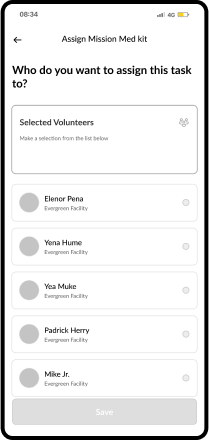
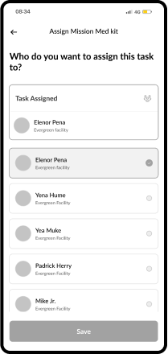
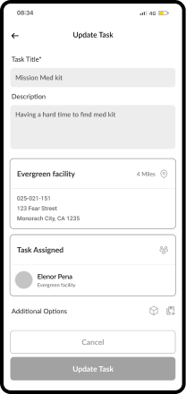
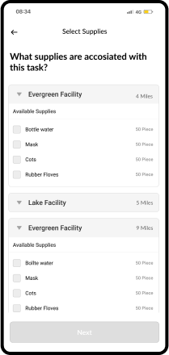
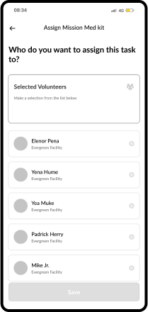
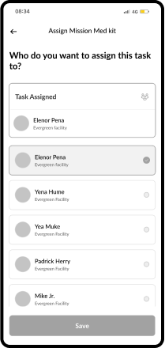
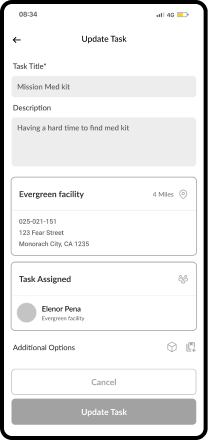
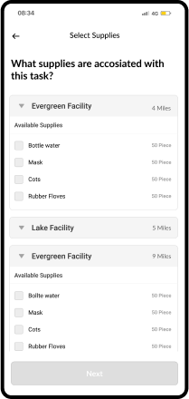

Sheltify
Sheltify is a B2C app that is made to coordinate community-led efforts
to respond to natural disasters.
This is a design project I worked on to deliver a
mobile-based solution to inform and guide evacuee, volunteers and
community organizers during wildfire.
Responsibility
Competitive analysis research
User flows / Customer journeys
Personas / Storyboarding
Wireframing, Prototyping
Designing
User testing/research
IA, design system
Tools
Notion, Miro
Figma, Google Forms
Zoom
Darution
37 Days
(15th Sept - 20th Oct)
Coffees
As usual
Way too many :)
PROBLEM STATEMENT
“HMW create an app that informs and guides users so that the community is safe and services are provided to those in need during a wildfire emergency?”
SNEAK PEAK TO THE SOLUTION
Final solution from the research insights and overall findings.
DISCOVERY PHASE
My primary goal is to understand the current user journey of evacuees & community organizers to identify key opportunities and needs.
Research Questions
Identified 3 key phasesPre-emergency
What happens during the wildfire?What supplies do communities need during an emergency?
Post-emergency
What happens after the wildfire?What supplies do communities need after an emergency?
Used this as a frame to build the research questions. From there this naturally evolved into the interview questions and script →
Competitive Analysis
 .
.
Oregon.gov
Oregon.gov’s main focuses are on information about current wildfires and what to do following a wildfire. It provides resources to help after a wildfire and insurance information. The site also has information on ways to access food, hotels and pet boarding. Additional resources are a map of where wildfires are, an air quality map, and a road closure map. Oregon.gov does not have a way to sign up for alerts. The site does have a way to donate or volunteerFire, Weather and Avalanche Center
The Fire, Weather and Avalanche Center site’s main goal is to show communities where wildfires are currently. It uses a map to provide this information. The site does not provide any information about how to prevent, prepare, or evacuate from a wildfire. The site does not provide any guidance on what to do following a wildfire either. The Fire, Weather and Avalanche Center does not provide alerts or resources for information about wildfires. The site has a way to make a donation, but does not have a way to volunteer.Calfire
Calfire’s focus is on preventing and preparing communities for wildfires. It provides a list of important items to pack in the occurrence of a wildfire. The site also guides communities with steps to follow to help prevent wildfires. The site also provides guidance on what to do following a wildfire. There are three main keys: Plan, Know, and Act that the site utilizes to provide information. Calfire also has an app that provides alerts and additional information. The site utilizes social media and has many additional resources. However, it lacks a map to clearly show where any current wildfires are. The Calfire site does not offer a way to donate or volunteer.User Interviews & Surveys
Key insights for evacuees
Be Prepared - Many evacuees wanted to plan for an evacuation, but didn’t know how and didn’t know what to take with them. They sometimes forgot important items.Be Informed - The resources that evacuees found online only met a few of their needs. So they turned to social media, news media and their inner social network to get answers on how to prepare and where to go.
Be Notified - Evacuees signed up for emergency alerts were limited. The alerts weren’t frequent enough and/or didn’t provide safety information.
Key Insights for Volunteers
Volunteering - People want to get involved, but don’t know how or understand thevolunteer positions, the skills required, and the time commitment. People that have volunteered in the past have found it to be a tremendously rewarding experience.
Connections - Evacuees have a range of needs that can be access to medical attention, resources, or FAQs. It’s important for Volunteers to identify these needs and connect the Evacuees to the appropriate resources.
Sharing the Impact - Volunteers are so busy while helping the community that they often lose sight of the impact they made. Hearing about the level of contribution inspires them to volunteer in the future.
Key Insights for Community Organizers
Manual Tracking - Organizers track supplies using excel sheets or by hand. Due to the manual nature and the need for frequent updates the data may not be accurate. Situations within a wildfire can change rapidly. It is extremely important that supplies and donation funds are accurate and available at a moments notice for the organizer to distribute.Training - Organizers recruit volunteers that do not have any experience or skills with emergency situations, and they don’t have the resources to train these individuals. Wildfires are dangerous even after they have run their course. It is important for organizers to provide resources to educate the community on common situations they might encounter.
Communication - Organizers communicate with various groups of Volunteers in different locations. Often times updates were not frequent enough to effectively help the community. It is imperative to understand the community’s needs in their time of crisis.
Persona
 1.png)
 1.png)

User Journey

Evacuee's Main Pain Points:
- Not all locations have emergency information
- Not enough resources for during and after a wildfire
- Doesn't know what roads are closed
Evacuee's Opportunities:
- Evacuees should have a list of tasks to complete in order to prepare for a wildfire in the area
- Easy access to safety information, wildfire maps and planned routes
- Notify friends and family they are safe
- Resources with information for preparing for a wildfire, during a wildfire and after a wildfire emergency.

Volunteer's Main Pain Points:
- Doesn't know what to do or how to help
- Stressed out
Volunteer's Opportunities:
- Resources to learn new skills and prepare for emergency situations
- Clearly defined tasks to prepare and provide help where needed
- Tools to share community’s wildfire emergencies with their social network
Community Organizer's Main Pain Points:
- Not having things organized
- Lack of communication
- Not enough supplies or volunteers
Community Organizer's Opportunities:
- 10,000 ft view of all resources; volunteers, supplies, and donation money
- Tools to easily communicate and delegate tasks to volunteers
- Tools to share community’s wildfire emergencies with evacuees and volunteers
STORYBOARDS

Zack hears from the tv news media that wildfires are starting to occur in his area. Zack is worried. So he texts his neighbors and they tell him about the “Sheltify” app and send a link.

While Zack is on the app, he checks out the county map to see the emergency status and is informed that his family is in the level 1 alert zone “Get Ready”. Zack talks to his partner and lets him know that they are in level 1 alert zone and they need to get ready. Together they look over the recommended wildfire preparation plan and evacuation packing list. That day, they pack some important items and take a few photos of their home. They feel ready and less stressed.

In the middle of night, Zack receives an alert on his phone from Sheltify that informs him they need to evacuate now! The app gives him a list of road closures to avoid.

They grab their go bags and pets, pack the car, give each other a hug and head out of town.

While Zack’s partner is driving, Zack is researching where they can stay and realizes that many hotels are closed. Zack is starting to panic. He looks at the app and finds a community safe location on the app and hopes that this location has a place for them to stay.

Using Sheltify, Zack verifies that there is room for him and his family and reserves a spot for him at the safe location. He sighs with relief. Zack, his partner and their 2 pets arrive at the community safe location.

Jennifer receives the notification that there is a fire and her services are needed. Jennifer and her husband double check that all their previous preparations are in order before they head out.

When they arrive, Jennifer checks in to the app and receives her first task. The new evacuees are beginning to arrive and she is posted at the entrance. It is her responsibility to greet them, instruct them on where to go and how to receive services they may need.

She meets Zach who isn’t feeling well. She helps the couple to their assigned area and as they walk, she enters his request into the app to ensure that he is assigned to a medical volunteer to get him checked out.

After about 3 hrs of helping Jennifer is feeling a bit overwhelmed. She bumps into Amelia and lets her know that she’s feeling a bit tired. Amelia has her check out of the app to collect herself, to get some rest and check on her own family.
Volunteer Jennifer is near Amelia the Organizer and informs her that she is going on a break. Amelia hopes she is okay and is not getting over worked.
Amelia the Organizer spreads the word on social media about the wildfire and the need for donations. Then, she starts using the messaging tool in the app to communicate with volunteers to make sure they take breaks as needed. She is worried about her volunteers just as much as the evacuees.
As requests come in from evacuees, Amelia chooses a volunteer from the provided list of volunteers that can complete the request. (medical attention, items needed, etc.) and will repeat this process. She wants to make sure that more emergent requests are handled first.
As time goes on and people are able to go back home, Amelia has volunteers provide information to the evacuees on resources and steps to take when going home. Such as what to do once they are home, whether the home has no damage or a lot of damage. She feels this information is important for people to have so they know who to contact for help.
Sitemap
This sitemap contains the overall structure of the app from start to finish.

View Full Sitemap
Mission and Vision Statements
Mission Statement

Vision Statement

 1.png)
 1.png)
 






